Reference: pages
Reference
Ferrite
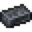
encodedlogistics:ferrite · Item · Stacks to 64 · Creative tab: Encoded Logistics: Materials
Iron and redstone made into a magnetic material, used all through the mod: photomasks, drives, heatsinks and most devices.
How to get it
encodedlogistics:ferrite
encodedlogistics:ferrite_from_ferrite_block
Used to make
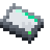
128K Storage Drive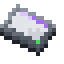
2M Storage Drive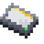
32K Storage Drive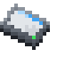
512K Storage Drive- 8" Diskette
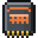
8K Storage Die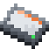
8K Storage Drive- Block of Ferrite
 Collector Plane
Collector Plane Deployer Plane
Deployer Plane Disk Drive
Disk Drive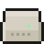
Expansion Cabinet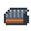
Heatsink Inventory Tap
Inventory Tap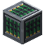
Job Buffer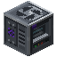
Lithography Press- Logic Photomask
- LTO-6 Tape
- LTO-7 Tape
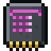
Memory Die- Memory Photomask
- Midrange System
 NAS
NAS- Processor Photomask
 Programmable Logic Controller
Programmable Logic Controller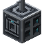
Relay Antenna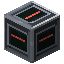
Scheduler Core Segment Isolator
Segment Isolator Server Rack
Server Rack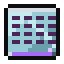
Storage Photomask- Tape Drive
- Tape Reel
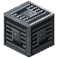
Thread Unit
Where it's documented
- Fabrication materials (Crafting and automation)
- Server Rack (Server racks)
- Storage Dies and Drives (Storage)
- Your first network (Getting started)
- Programmable Logic Controller (Control and facility)
- Progression (Getting started)
- Rack devices (Server racks)
- Lithography (Crafting and automation)
- Bridges and links (Networking)
- NAS and SAN (Storage)
- LTO tapes and Tape Libraries (Storage)
- Segments (Networks)
- Cable parts (Networks)
- Midrange storage (Storage)
- Schedulers (Crafting and automation)
- The Midrange line (Crafting and automation)